01
動作
輸出系統
發光
LED
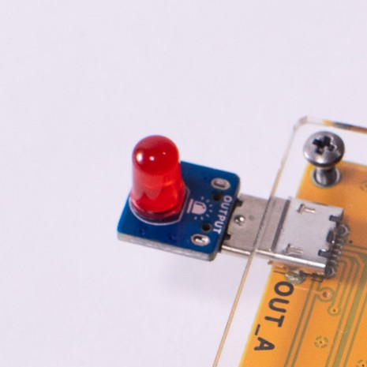
返回目錄 ↑說明
當通電時會發光的小燈泡。只是開關控制的簡單零件。
運作、輸出及計算
點亮／熄滅
使用方法
用於狀態顯示、閃爍警報、重現交通號誌等。
應用例、運作原理及控制方法
【製作交通號誌】 紅色LED點亮3秒後熄滅，接著藍色LED點亮3秒後熄滅。此動作可用for區塊等重複。

返回目錄 ↑當通電時會發光的小燈泡。只是開關控制的簡單零件。
點亮／熄滅
用於狀態顯示、閃爍警報、重現交通號誌等。
【製作交通號誌】 紅色LED點亮3秒後熄滅，接著藍色LED點亮3秒後熄滅。此動作可用for區塊等重複。
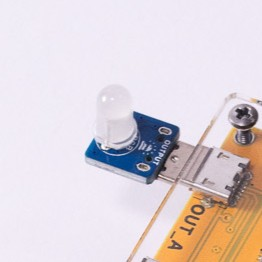
返回目錄 ↑這是可以通過組合紅、綠、藍（RGB）三色來表現各種顏色的LED。
按順序設定多個顏色，並在顏色之間用漸層變化。
可用於根據心情或狀態更改顏色、裝飾照明等。
顏色的混合方式為「光的三原色」，建議插入左下、右下的連接埠。（對紅、綠、藍三色的亮度進行細微調整）。全彩LED非常亮，請注意不要直視。（特別是白色（全部顏色MAX）非常刺眼）。
【根據溫度變色的溫度計】 20℃以下為藍色，20～28℃為綠色，28℃以上為紅色。用if區塊判斷溫度感應器的數值來切換顏色。
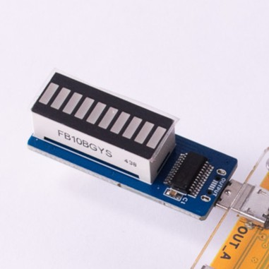
返回目錄 ↑是一種有10個LED排列成一列的條型顯示裝置。LED的顏色分為藍、綠、橙、紅。
依照步驟設定每個LED的開／關及顯示時間，按順序顯示。 LED1：藍，LED2～5：綠，LED6～8：橙，LED9～10：紅
可用於電量顯示、等級計、進度顯示等。 從數字較小的一端（藍色側）依序點亮，能表現出像剩餘量計的效果。
【顯示土壤水分等級】 用map區塊將土壤水分比例轉換至0～10，點亮對應數量的LED。100％則點亮10個，0％則0個。
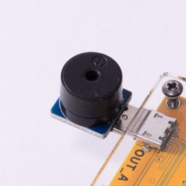
返回目錄 ↑將電氣信號轉換為振動並發出聲音的零件。可以通過組合音高和音長來演奏旋律。
在鋼琴捲軸畫面上設定音符。可以指定 C2～B5 的音域以及休止符。 C2 → 低音 C C3 → 稍高的 C C4 → 鋼琴中音 C C5 → 高音 C B5 → 非常高的 B
用於旋律演奏、鬧鐘音、音效等。
這是一個能發出音程的蜂鳴器。無法播放如 MP3 般複雜的聲音或音樂。可以在鋼琴捲軸上排列音符來演奏，但不支援升降半音等。如果需要使用半音，需在和弦編輯器中直接編輯。
【對感應器反應並演奏旋律】 按下開關時演奏 Do Re Mi Fa So La Si Do。與距離感應器組合可以用於接近時音速加快的音效。
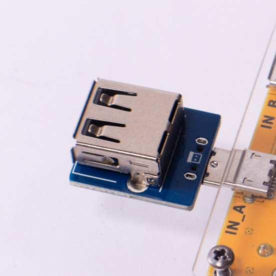
返回目錄 ↑可透過開關控制向 USB 埠供電的連接器。
ON（供電）／OFF（停止供電）
用於依條件給 USB 設備供電或管理充電時機等。
可從 USB 連接器供電給連接的設備。但供電量有限，可能無法用於需要大量電力的設備。適合為小型 LED 燈、風扇等 USB 操作的小型設備供電。
【僅在白天充電的節能裝置】 當光度感應器判斷為夜晚時，將 USB 連接器關閉，只在白天供電。可用於根據條件控制充電。
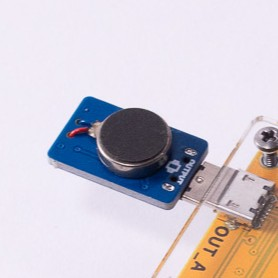
返回目錄 ↑小型馬達高速旋轉時，會產生嗡嗡振動的零件。原理與智慧型手機的來電震動相同。
ON／OFF
可用於觸覺回饋，或在不希望發出聲音的地方作為警報等。
連續使用（長時間一直開啟）可能會發熱。若觸摸到感到燙，請立即拔掉連接電腦與開發板的 USB 線。建議採取「振動 5 秒 → 休息 2 秒」的節奏。
【到時間以振動提醒】 使用 millis()，經過一定時間（例如 30 秒）後將振動馬達開啟，3 秒後關閉。是一種無聲提醒的靜音鬧鈴。 【以振動傳達與障礙物的距離】 使用距離感應器測量與障礙物的距離，靠近時縮短振動間隔。可用於如遊戲手柄般的直覺回饋。
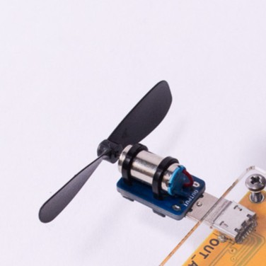
返回目錄 ↑用於無人機等小型螺旋槳的馬達。像 LED 或水泵一樣，透過開/關來控制。
ON／OFF
可用於送風、利用螺旋槳的實驗、換氣系統等。
為避免受傷，旋轉中請勿觸碰葉片。
【溫度變高時自動啟動風扇】 結合溫度感應器，當溫度超過28℃時打開風扇，低於25℃時關閉。可以作為自動溫度調節風扇使用。
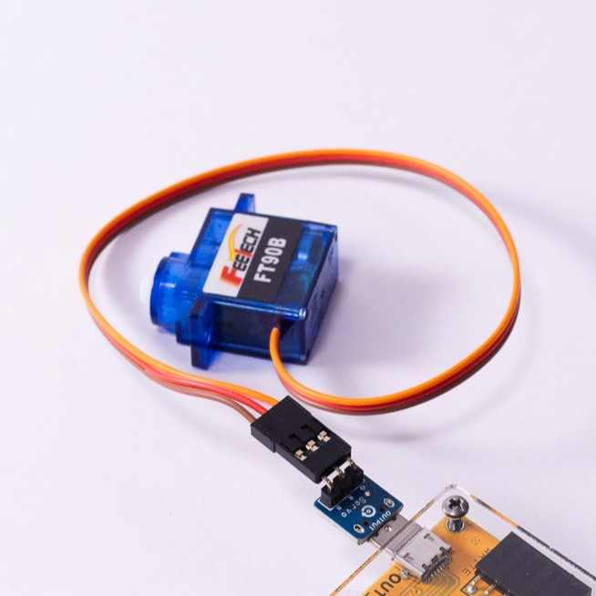
返回目錄 ↑這是一種可以在0～180度範圍內準確移動到指定角度的馬達，內部配有齒輪和角度感應器。
在0～180度範圍內指定角度
可用於機器人手臂、門的開關、舵機裝置等。
可在0°〜180°範圍內指定角度進行操作。移動重物或施加過大力量可能會導致故障，且無法連續旋轉。
【有人來時揮手的機器人】 當人體感應器感應到人時，伺服馬達會依次動作從0度→90度→0度。可作為迎接來訪者的機器人使用。
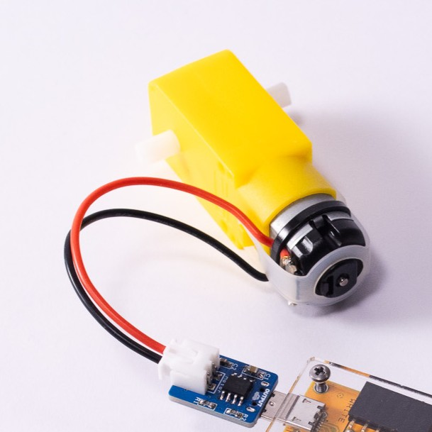
返回目錄 ↑是一種小型直流馬達，用於Tamiya齒輪箱等裝置，通過兩個接腳控制正轉、逆轉和停止。
正轉／逆轉／停止
可用於車型機器人的輪子、輸送帶、風扇等。
TT馬達可在「轉動、反向轉動、不轉動」三種狀態之間切換。無法調節速度。此外，移動重物或施加大負荷時可能會影響板子，需注意。
【用開關操作前進與後退】 按下開關A時為正轉（前進），按下開關B時為逆轉（後退），兩個開關都放開則停止。可用於手動操作的車型機器人。
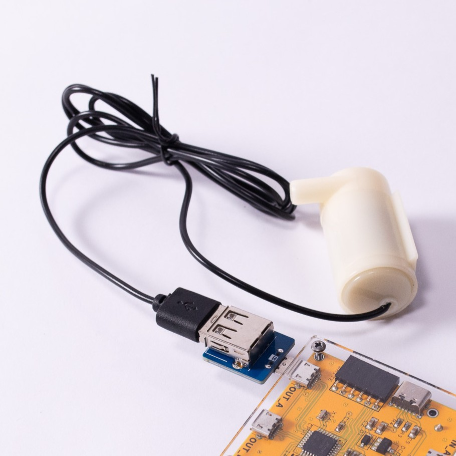
返回目錄 ↑這是一個用來輸送水的小型水泵。透過ON／OFF動作。
送水／停止
可用於自動澆水、水族箱水循環、噴泉等。
在沒有水的狀態下持續運轉水泵，可能會導致故障。請務必在有水的狀態下使用。
【每日早晨固定時間自動澆水】 當GPS時間變為「07:00:00」時啟動水泵，10秒後關閉。這是一種每天早晨固定時間澆水的裝置。
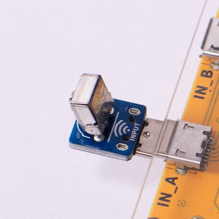
返回目錄 ↑這是一個可接收紅外線信號的感應器，其原理與電視遙控器相同。 通常與紅外線發射接頭配對使用，也可接收市售遙控器的信號。
接收預設信號1～5，並透過條件分岐判定
可用於遙控器操作設備，或與紅外線發射配合進行信號轉發。 使用紅外線學習模組，可學習現有遙控器信號並輸出至序列監察器，並註冊為自訂信號。
太陽光或日光燈等強光中含有紅外線，可能會導致感應器誤動作。請盡量在避免直射陽光或強光照射的地方使用。
【使用遙控器切換多個動作】 使用預設信號1點亮LED，信號2讓喇叭發聲，信號3驅動伺服馬達。若與紅外線發射結合，還可以自製遙控器。
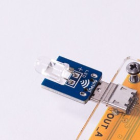
返回目錄 ↑這是一個用於從紅外線LED發送信號的連接器。也可用於自製電視遙控器等用途。
可發送預設信號1～5或自定義學習信號
用於家電遙控操作，或與紅外線接收連接器結合進行無線通信。
紅外線像光一樣，只能直線傳播。發射時請對準接收部分。若中間有物體，信號可能無法傳達。
【按下按鈕開啟冷氣】 使用紅外線學習區塊學習並註冊冷氣遙控信號。按下開關即可發送註冊信號，操作冷氣。
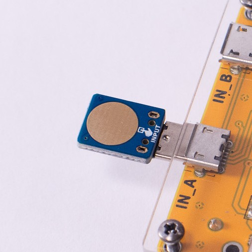
返回目錄 ↑當手指觸碰時感應的感應器。偵測靜電容量的變化。
觸碰為1，離開為0
與if區塊結合使用，例如「觸碰時點亮LED」。
濕手或靠近金屬時可能會誤觸發。
【觸碰時LED點亮】 只有在觸碰感應器時LED才點亮。用if區塊判定「觸碰＝1」，控制LED開／關。
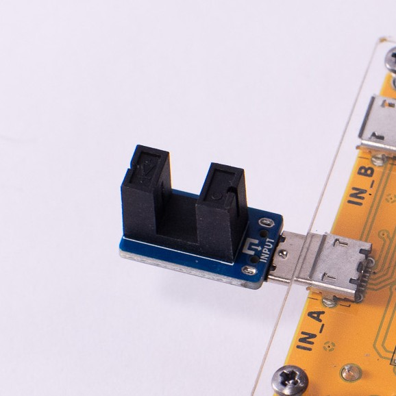
返回目錄 ↑這是一種可以檢測紅外線被阻擋的感應器。當物體通過U型的發光部與接收部之間時會產生反應。
通過則為1，沒有則為0
用於計算通過次數或檢測閘門的開關等。
其特點是可以在不接觸物體的情況下檢測。
【計算通過閘門的次數】 每當物體橫過感應器前方時執行「i += 1」。在7SEG顯示時，可用於來客計數器或庫存管理實驗。
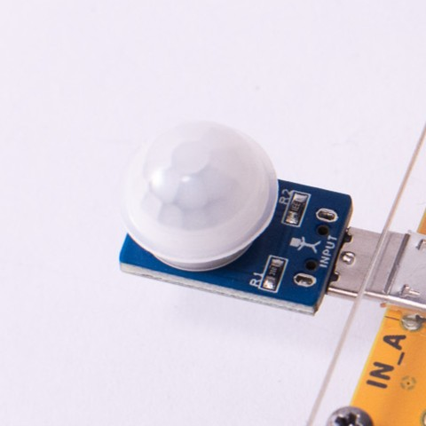
返回目錄 ↑這是一種可以檢測人體等溫暖物體移動的感應器。藉由PIR（被動紅外線）感應器，檢測物體散發紅外線的變化。
檢測到為1，未檢測為0 感測距離：約3〜5米 感測角度：約100度
用於自動燈光或入侵檢測等。
由於檢測的是移動，因此靜止不動的人可能無法被檢測。檢測後輸出會維持一段時間。
【有人時開燈】 當人體感應器為1時，LED亮起並重設計時器。如果在一定時間（例如：10秒）內未檢測到，LED將關閉。原理與走廊自動照明相同。
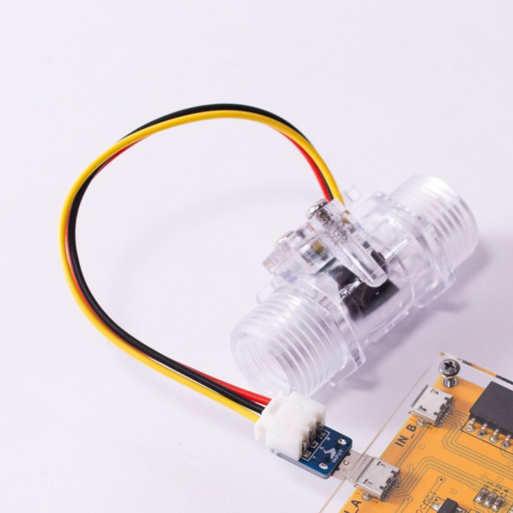
返回目錄 ↑這是一個用來測量水流的有無及流量的感應器。內部的葉輪會因水流而旋轉，並發出脈衝信號。 根據用途，可以使用檢測模式、秒脈衝模式、累計脈衝模式這三種模式。 【內部構造】 水流感應器的內部裝有一個小葉輪（葉片車）。 當水流經時，葉輪旋轉，並根據旋轉產生稱為「脈衝信號」的短電信號。 水流快：葉輪旋轉快，脈衝數增加。 水流慢：葉輪旋轉慢，脈衝數減少。 利用這個脈衝數，可計算水的流量及總量。 【主要規格】 工作電壓：5V 脈衝係數：每秒約7.5脈衝，相當於流量1L/min。 使用開發板：橙色開發板 「7.5」是用來將脈衝數換算為流量的係數。
檢測模式：水流存在則為1 流量測量模式：每秒脈衝值或累計脈衝值 （詳細） 檢測模式：0或1 流量測量（每秒脈衝）：數值 流量測量（累計脈衝）：代入變數 【每分鐘流量】 流量以每秒測量的脈衝數除以7.5計算。 流量（L/min）＝每秒脈衝數 ÷ 7.5 計算範例： 75脈衝時：75 ÷ 7.5 ＝ 10L/min 15脈衝時：15 ÷ 7.5 ＝ 2L/min
用於測量水道的使用量或確認水泵是否運作。 偵測：僅確認水是否流動。 每秒脈波：連續取得每秒的脈波數。 累計脈波：累積總脈波數，計算總流量。 【流經的總水量】 使用累計脈波數可以計算流經的總水量。 總流量（L）＝累計脈波數 ÷ 7.5 ÷ 60 由於「7.5 × 60 ＝ 450」，也可以用以下公式計算。 總流量（L）＝累計脈波數 ÷ 450 計算範例： 450脈波的情況：450 ÷ 450 ＝ 1L 2,250脈波的情況：2,250 ÷ 450 ＝ 5L
將脈波值換算成實際流量（ml／分）時，需要根據所使用傳感器的規格進行計算。 【使用注意事項（補充）】 係數「7.5」僅供參考。由於傳感器個體差異及水壓等因素，測量結果可能存在誤差，因此不適合精確計量。 在橙色開發板上，為防止丟失脈波，使用PCINT中斷。所需代碼由Schoomy自動生成。 每秒脈波值每秒更新。為避免在迴圈內多次處理相同值，可設置等待時間，或使用millis()每秒執行一次處理。 傳感器有水流方向。請按照本體上標示的箭頭安裝。方向相反將無法正確運作。
【流出1公升水後停止水泵】 將累計脈波數累積到變數中，通過「累計脈波數÷450」計算總流量（L）。超過1L時，關閉水泵並重置變數。
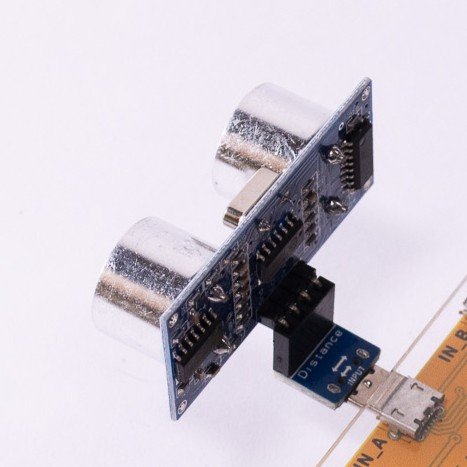
返回目錄 ↑這是一種透過發射超音波，並從物體反射回來的時間來計算距離的感應器。原理和蝙蝠的回聲定位相同。
以公分為單位的距離（含小數點）
用於偵測障礙物或當有人接近時作出反應等機制。
測量範圍約為2～400公分。布料或棉等柔軟材質會吸收音波，因此可能無法精確測量。
【接近時音調升高】 距離越近，音調越高，或縮短發聲間隔。使用map積木將距離轉換為音調等範圍。
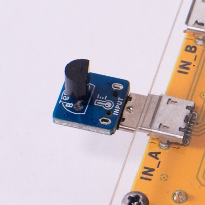
返回目錄 ↑可以測量周圍空氣溫度的零件。具防水設計，即使碰水也沒問題，可用於戶外或水邊實驗。
以℃為單位的溫度（含小數點）
可用於室溫管理或依溫度控制風扇等。
測量需要一些時間。使用數位通信而非類比值，因此可進行高精度測量。
【溫度升高時啟動風扇】 溫度超過28℃時開啟風扇，低於25℃時關閉。分開設定上限與下限可穩定控制。
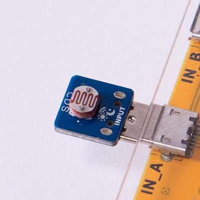
返回目錄 ↑可以讀取周圍亮度的零件。亮度越高，回傳值越大；越暗則值越小，因此可以感知房間照明或日照變化。
感應器值（原始值）、比例（%）、或亮度指數
在天色變暗時自動點亮的機制，以及日照監測等用途。
返回作為亮度參考的數值。光度感應器的「亮度指數」模式（BRIGHTNESS 模式）是依照 SQUEMY 獨自的計算公式算出的值，與照明專家使用的精確勒克斯值不同。雖然不是像勒克斯這樣精確的光線單位，但可以用來判斷明暗或者調查亮度變化。「感應器值（RAW 模式）」會返回 0~1023 的原始數值。這個數值也可以用 MAP 模塊轉換到其他範圍。不過，如果使用亮度指數模式的值套用 MAP 模塊，將 0~1023 作為範圍基準是不正確的。請實際確認該場所亮時與暗時的測量值，並以此作為基準設定。橘色板僅支援左上及右上連接埠。
【天色變暗時自動點亮 LED】 使用亮度指數在 if 模塊進行判斷，當低於設定值時讓 LED 開啟。例如，當亮度指數低於 50 時點亮。
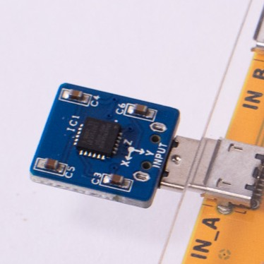
返回目錄 ↑這是一種用X、Y、Z三個軸測量物體加速度（運動的變化）和傾斜的感應器。這個原理也被用於智慧型手機的螢幕旋轉。
各軸的加速度值、加速度大小，或傾斜角度
可用於傾斜偵測、自由落體偵測、步數計數等。
橘色板僅支援左上連接埠。
【讓傾斜方向的 LED 發光】 判定 X 軸的傾斜角度，向右傾斜時點亮右側 LED，向左傾斜時點亮左側 LED。可以像使用遊戲控制器一樣操作。
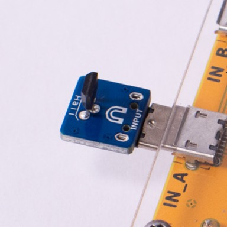
返回目錄 ↑可以感應磁鐵的接近和方向的零件。當磁鐵靠近時值會改變，可用於門的開關或利用磁鐵製作裝置。
感測值或百分比（%）
用於偵測磁鐵接近，或將磁鐵貼於旋轉物體來計算旋轉次數等用途。
橘色主板僅支援左上、右上連接埠。
【偵測門的開關】 在門框上安裝磁鐵，在門上安裝感應器。從磁值的變化判定門是否打開，並用 LED 或聲音通知。
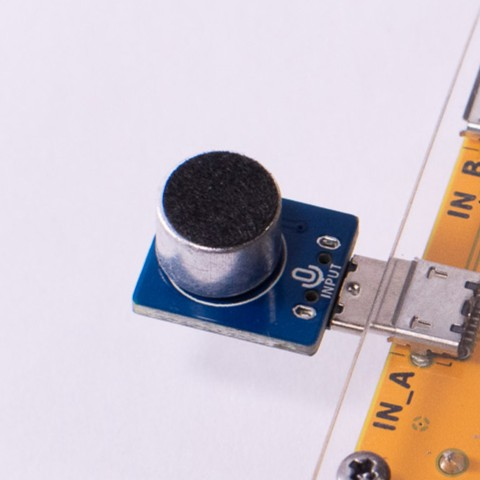
返回目錄 ↑內建麥克風的類比感應器，可偵測周圍的聲音大小（音量）。
感測值或百分比（%）
用於對拍手的反應或噪音監控等。
無法判定音調（音高），僅偵測音量。橘色主板僅支援左上、右上連接埠。
【用拍手切換燈的 ON／OFF】 當音量感應器的值達到設定值以上時，反轉 flag 變數以切換 LED 的 ON／OFF。每次拍手都會改變燈的狀態。
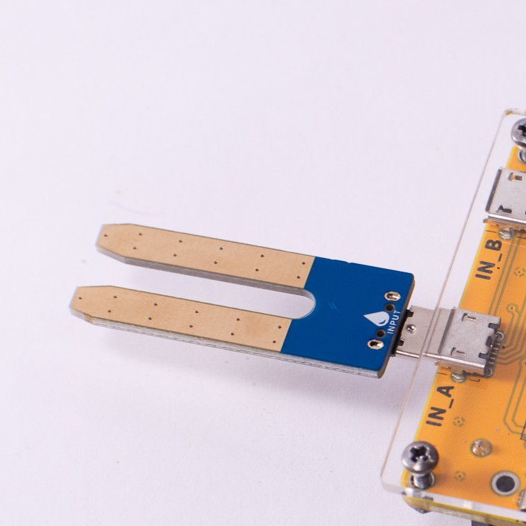
返回目錄 ↑是一種測量土壤中水分含量的感應器。它透過判斷兩根電極棒之間電流的通過性（導電率）來測量。
感應器數值、比例（%），或手動校正模式
用於自動判斷植物澆水時機的機制等。
長期插在土壤中可能會造成電極腐蝕。橙色板僅支援左上與右上接口。
【植物乾燥時自動澆水】 當土壤水分低於30%時，啟動水泵；高於60%時停止。透過設定上下限的遲滯控制，可避免頻繁開關。
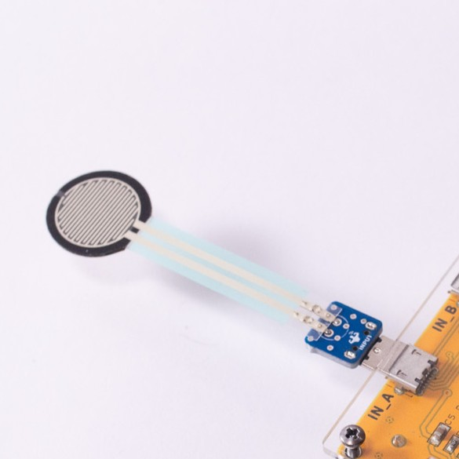
返回目錄 ↑這是一種薄膜狀的感應器，可以以類比值讀取物體被按壓時的力量。可透過踩踏或握持使用。
感應器數值或比例（%）
用於測量握力、簡易重量感測、判斷是否有人坐下等。
無法測量精確重量。請作為“按壓的強度”參考使用。橙色板僅支援左上與右上接口。
【踩踏反應式墊子開關】 將感應器放置於墊子下方，當壓力達到設定值以上時，啟動LED或喇叭。可用於例如腳踩開門的機制。
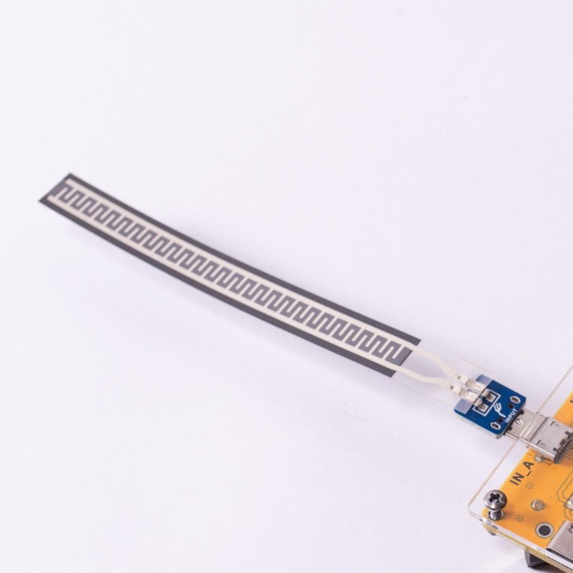
返回目錄 ↑是一種柔性感應器，可用類比值讀取彎曲程度。使用當彎曲時電阻值會改變的材料。
傳感器數值或比例（%）
用於偵測手指彎曲程度的手套，或用於機器手臂的角度偵測等。
反覆彎曲可能會造成劣化。請勿折成銳角。橙色板 僅支援左上與右上連接埠。
【用手指的彎曲程度操作伺服馬達】 將彎曲感應器固定在手指上，利用 map 模組將彎曲程度轉換為 0～180，再傳送給伺服馬達的角度。可作為機器手的控制器使用。
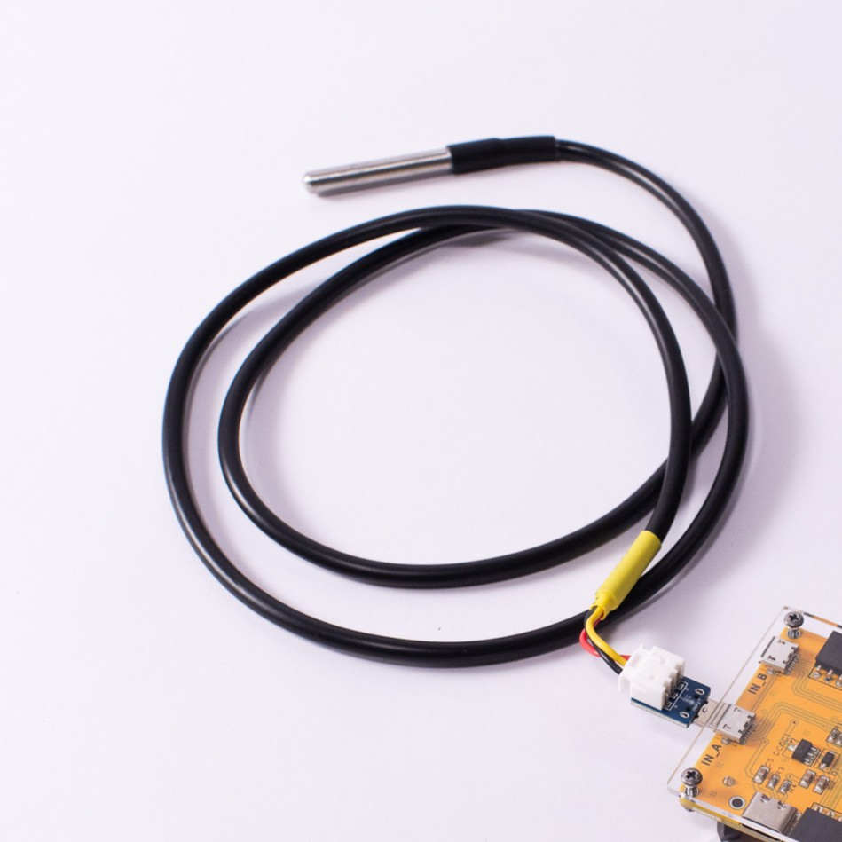
返回目錄 ↑可放入水中測量溫度的防水零件。可直接放入池塘或水族箱，因此非常適合用於觀察或實驗水溫。
以℃為單位的溫度
用於水族箱的溫度管理或檢查澆水用水的溫度等。
感應器本體為防水，但請勿讓接頭部分接觸水。
【依水族箱溫度控制加熱器】 當水溫低於 24℃ 時，從 USB 連接埠供電給加熱器，超過 28℃ 時停止供電。
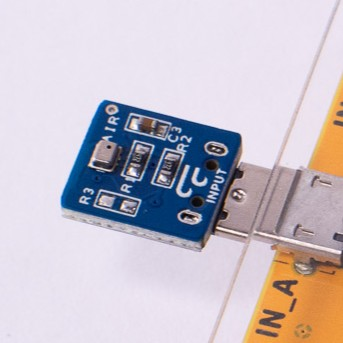
返回目錄 ↑可測量空氣重量（氣壓）的零件。可透過氣壓變化預測天氣，也可用於測量高度（海拔）。
氣壓（hPa）或高度（m）
用於根據氣壓變化預測天氣或用作高度計等。
無論插入哪個連接埠都可以使用，但無法同時在橘色板上使用兩個。
【從氣壓變化預測天氣】 將氣壓記錄到變數中，並與 1 分鐘後的值比較。如果氣壓下降，則在序列監察器上顯示「可能下雨」，如果上升，則顯示「可能會晴」。
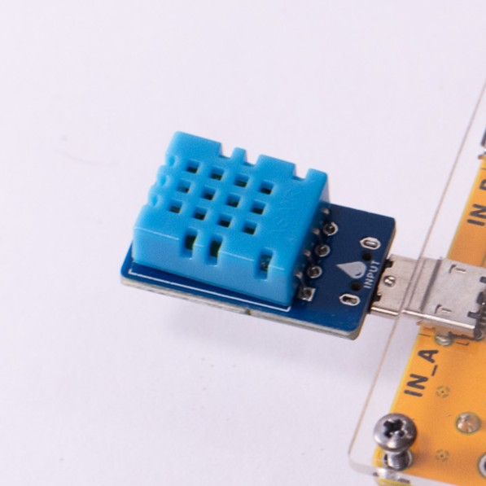
返回目錄 ↑這是一個可以測量空氣濕度（潮濕程度）的組件。可用於梅雨季節或冬季乾燥時，以數值確認周圍空氣的變化。
0～100（%）的濕度值
可用於室內濕度管理或提醒乾燥的警報等。
由於此感應器數值變化需要一些時間，即使快速讀取，數值也會緩慢變化。
【濕度下降時加濕】 當濕度低於 40% 時，啟動水泵使噴霧器運作，濕度超過 60% 時關閉。可作為乾燥對策的自動裝置使用。
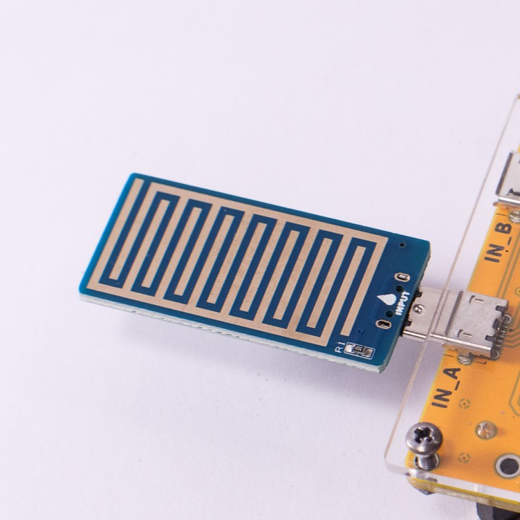
返回目錄 ↑這是一個可檢測雨滴或水滴的類比感應器。基板上的電極間若接觸到水，導電率會改變。
感應器數值或比例（%） ⏎
可用於下雨時的通知或自動關閉窗戶等機制。 ・完全乾燥時為最大值（橙色板約為1023）。 ・越濕值越小。 ・輕微濕和大雨之間值差異很大，因此使用比例(%)模式更容易比較。 ・感應器表面水平或斜放時，水容易流動且反應更穩定。 ⏎
在橙色板上僅支持左上與右上接口。恢復乾燥狀態需要一些時間。長時間放置於室外金屬部分可能會生鏽。
【下雨時以聲音通知】 當雨感測比例超過20%時，喇叭會發出警告聲。可用於通知收衣服等警示工具。
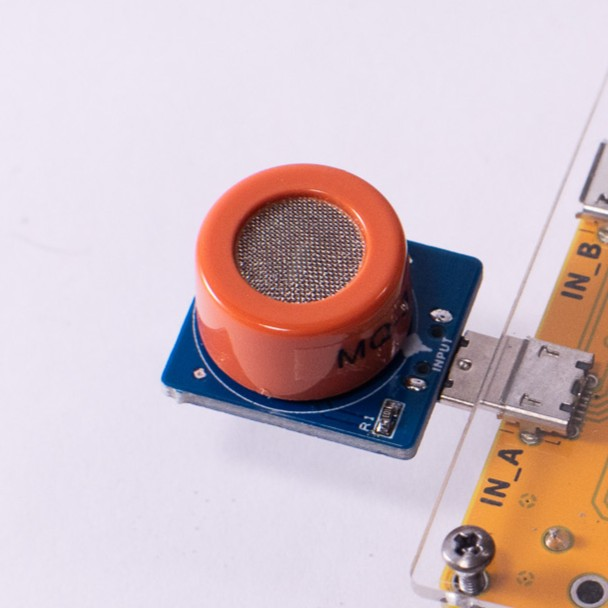
返回目錄 ↑可感測空氣中酒精的感應器。酒精濃度越高，返回的值越大。
感應器值或比例（%） 當酒精接觸感應器時，電流更容易流動。 ⏎
可用於消毒液噴霧、發酵過程等身邊酒精變化的感測，或酒精檢測器實驗。 除酒精外，稱為「揮發性有機化合物」的某些氣體感應器亦會反應。 ・稀釋劑或膠水等有機溶劑 ・指甲油卸除液 ・汽油或煤油氣味 ・香煙煙霧 ・香水或髮膠
準確測量濃度需預熱數分鐘至數小時。在橙色板上僅支持左上與右上接口。
【手指消毒確認裝置】 當將消毒液噴灑到手上時，裝置會檢測酒精濃度，當測量值達到設定值以上時，LED會亮起，提示「消毒完成」。
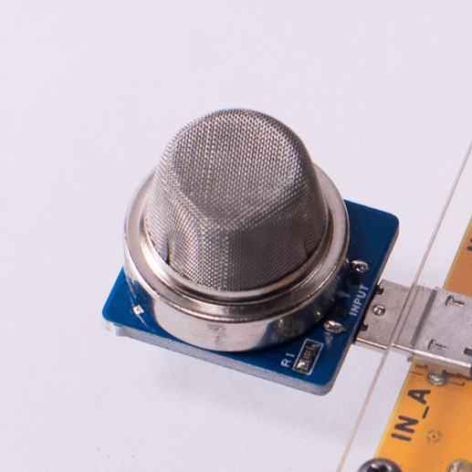
返回目錄 ↑這是一種用來測量空氣中氨濃度的感應器。感應器內含有金屬氧化物材料，當氨氣接觸時，電流的流動方式會改變，可以讀取這種變化作為測量值。
感應器值（原始值）或氨氣濃度（ppm） 檢測範圍為5～500ppm。
可用於廁所或畜牧環境的氣味管理、水質監測等。
氨氣濃度模式僅支援橙色主板。預熱時間需數小時～最長可達48小時。
【自動通風廁所或飼育箱】 當氨氣濃度達到設定ppm以上時，啟動風扇進行通風；濃度下降後則關閉。
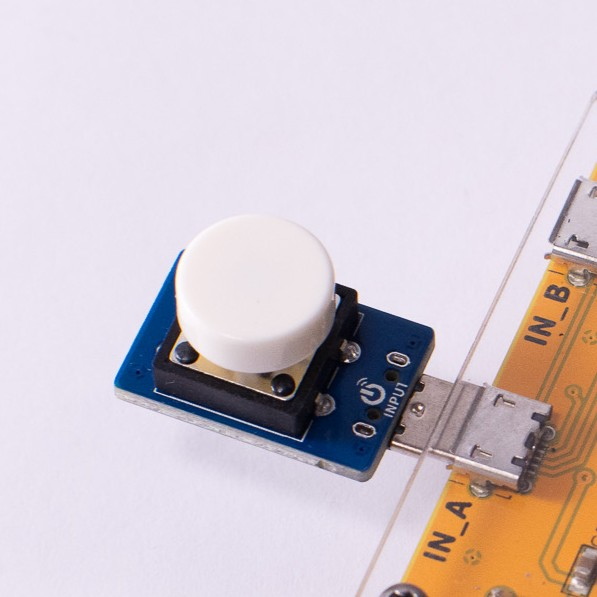
返回目錄 ↑按下即連接電路的按鈕型裝置，是最簡單的輸入裝置。
按下為1，放開為0（SchooMy為低電位有效設計，內部已進行反相處理）
用於明確的開／關操作，如「按下即開始動作」。
長按判定需使用millis()實現。
【每次按鈕計數增加】 準備變數i，將當前狀態與上次狀態比較，在按鈕被按下的瞬間執行「i += 1」。顯示在7SEG上即成為計數器。
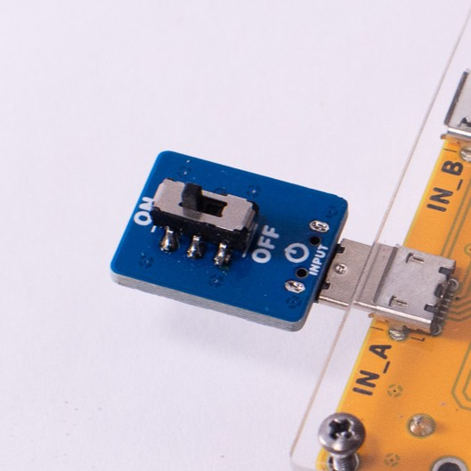
返回目錄 ↑這是一種可以橫向滑動來切換開／關的開關。
開位置為1，關位置為0
用於模式切換或像電源開關的功能。
因為是保持型開關，因此不需要持續按壓。
【切換運作模式】 在開位置顯示感應器數值到序列監察器，在關位置停止處理。適合用於切換運作模式。
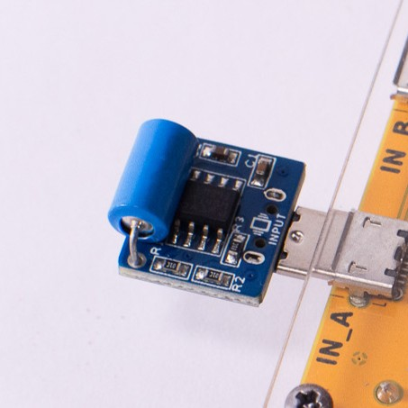
返回目錄 ↑這是一種可以檢測板子或物體振動的開關。內部的導電彈簧會因振動而接觸。
檢測到振動為1，靜止為0
用於檢測碰撞瞬間或作為提示振動的警報等。
靈敏度是固定的，無法調整。適合檢測較大的衝擊而非細微振動。
【敲桌子時警報響起】 檢測到振動時用喇叭發聲。如果只想瞬間反應，需比對前一次狀態，僅在「0→1」時執行。
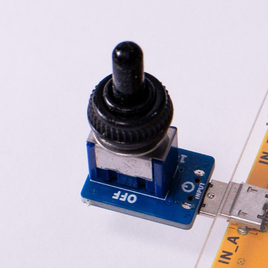
返回目錄 ↑這是一種可以切換三段（關／平／開）的特殊開關。
三值 0（關）、1（平）、2（開）
當需要切換三種模式時很方便。例如用於「低速・停止・高速」等。
如果只想使用普通的ON／OFF，滑動開關會更簡單。
【用水泵進行三段控制】 0（OFF）：水泵停止。 1（FLAT）：每3秒間斷運作一次。 2（ON）：水泵連續運作。 也可以用於「低・中・高」或「停止・手動・自動」等切換。
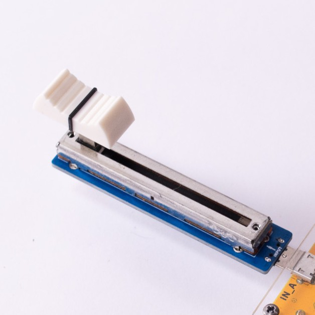
返回目錄 ↑是一個可以通過滑動輸入類比值的零件。結構類似音量調節旋鈕。
從設定的最小值到最大值之間的連續數值
可用於LED亮度調整或伺服馬達角度指定等。
在橙色板上僅支援左上、右上連接埠。
【用滑桿調整伺服馬達角度】 將推桿的輸出範圍設定為0～180，並傳遞到伺服馬達角度。伺服會隨滑桿動作實時運作。
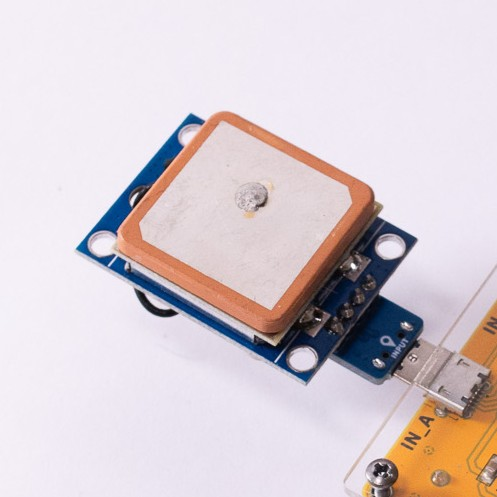
返回目錄 ↑可以接收來自人造衛星的電波，取得當前位置（緯度・經度）、距離目的地的距離、移動速度、當前時間等資訊的零件。運作原理與車用導航或智慧型手機地圖應用相同。
緯度・經度（度）、距離（km／m）、至目的地速度（km／h・m／s）、日期時間（字串）
可用於位置資訊記錄器、速度計、到達通知等。
1. 初次定位（冷啟動）需要 2～10 分。需要在戶外視野開闊的地方。 2. 因在 setup() 中等待定位完成，所以進入 loop() 時已完成定位。 3. 返回的時間已轉換為 JST（日本時間）。 4. 若無法定位，將返回「--」。
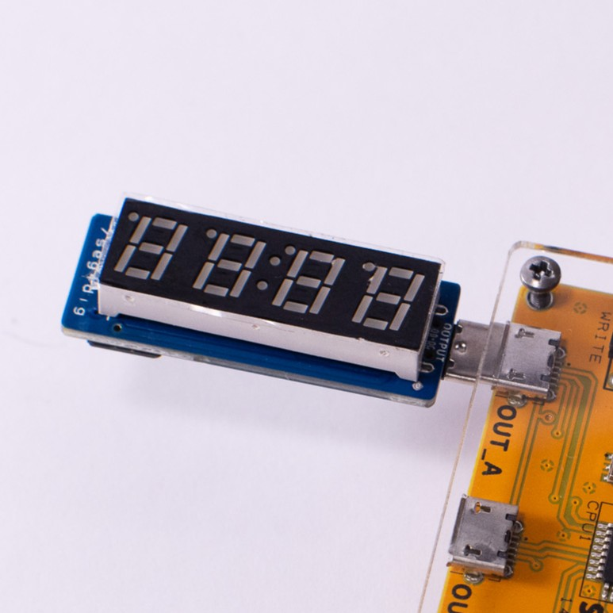
返回目錄 ↑是一種數字顯示裝置，可用 4 位數顯示數字及部分文字。
整數模式：-999～9999 的整數 小數模式：以小數點後 1 位顯示 -99.9～999.9 文字模式：每位顯示 A～Z、0～9、符號等
用於顯示感應器數值、倒數計時、得分顯示等。
若對 4 位數全部指定空格，可熄滅顯示。因無專用清除模組，可用此方法代替。
【倒數計時器】 變數 i 從 10 開始，每秒減 1 並顯示於 7SEG。到 0 時用喇叭發出聲音。
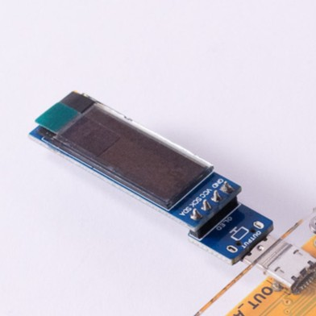
返回目錄 ↑是一款 128×32 像素的小型有機 EL 顯示器。可顯示文字及條形圖。
文字：多行、字體大小小·中·大、背景色黑·白 儀表：以條形圖顯示數值 清除：清空畫面
用於感應器數值的即時顯示或訊息顯示等。
橙色板 只支援左上連接埠。也可顯示平假名·片假名。
【顯示氣象站】 第一行顯示溫度、第二行顯示濕度、第三行顯示氣壓。可以將多個感應器的數值集中在同一畫面確認。
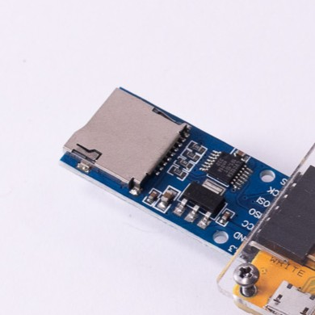
返回目錄 ↑這是一個可以將感應器測量的數值等數據記錄並保存到SD卡的部件。寫入的數據可以將SD卡取出並插入電腦，作為檔案打開以進行確認。
寫入：以新建或追加方式保存 清除：刪除檔案內容
檔名可以從data_1～data_5中選擇，支援txt、csv、tsv格式。用於感應器數據的日誌保存或實驗數據的記錄等。
SD卡需要事先以「FAT32」格式進行格式化（初始化）。 使用Schoomy的積木時，數據寫入會自動完成。關閉電源時，請確保寫入積木的處理已完成。僅支援Orange板。
【每分鐘自動記錄溫度與濕度】 使用millis()每60秒讀取一次溫度和濕度，並追加至CSV檔案。將SD卡在電腦上打開後，即成為可以用Excel製作圖表的數據記錄器。